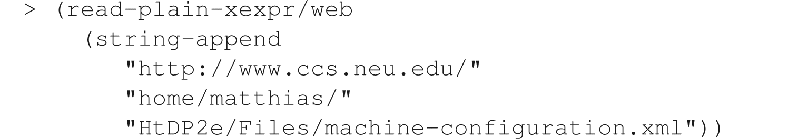
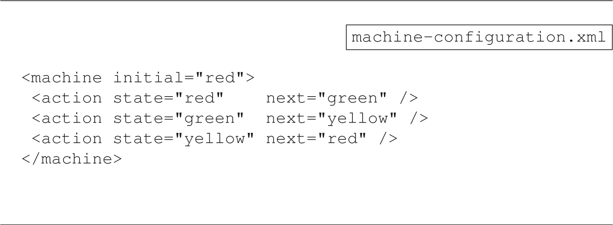
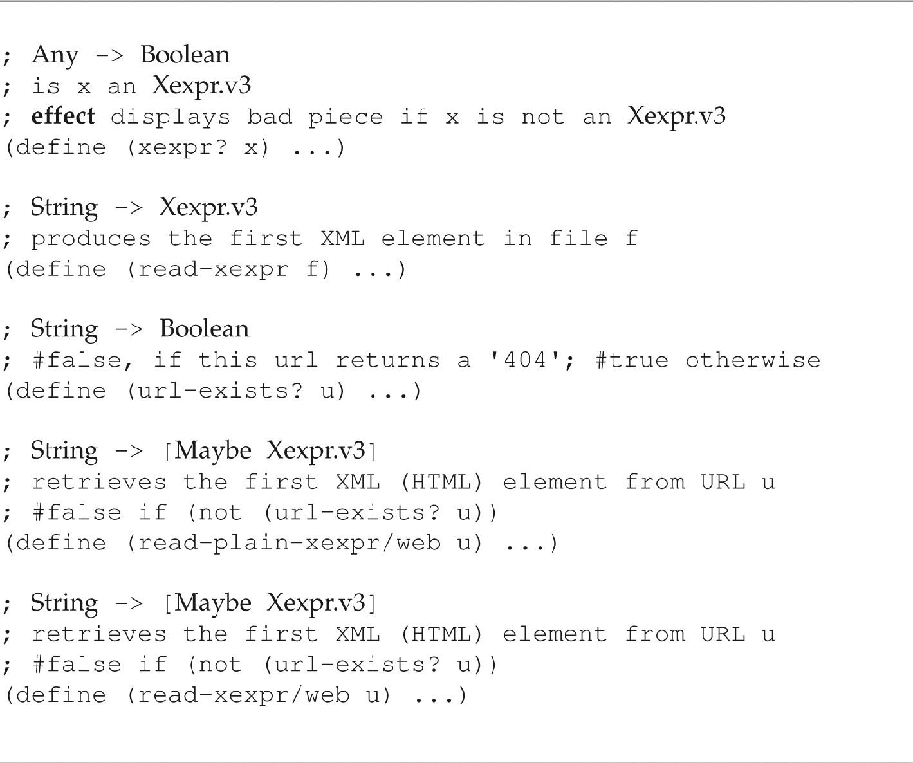
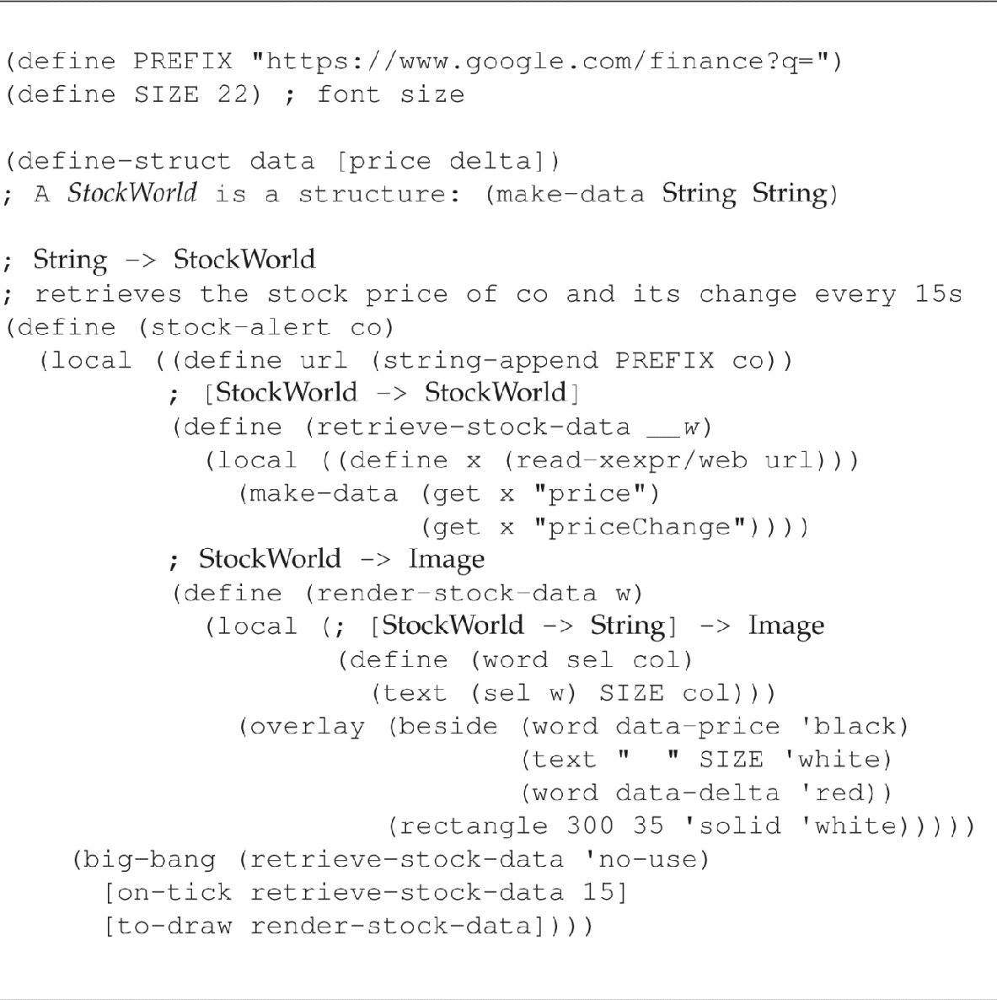
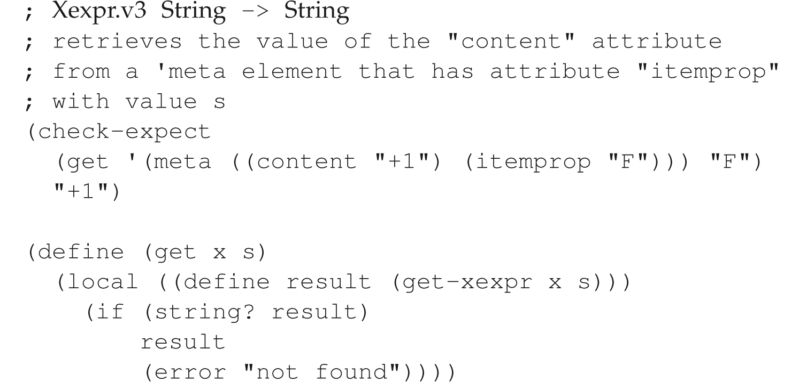

22.4 Reading XML
Systems administrators expect that sophisticated applications read configuration programs from a file or possibly from some place on the web. In ISL+ your programs can retrieve (some) XML information. Figure 132 shows the relevant excerpt from the teachpack. For consistency, the figure uses the suffix .v3 for its XML representation, including those data definitions for which there is no version 2:
; An Xexpr.v3 is one of:
; -- Symbol
; -- String
; -- Number
; -- (cons Symbol (cons Attribute*.v3 [List-of Xexpr.v3]))
; -- (cons Symbol [List-of Xexpr.v3])
;
; An Attribute*.v3 is a [List-of Attribute.v3].
;
; An Attribute.v3 is a list of two items:
; (list Symbol String)
This section uses 2htdp/batch-io 2htdp/universe, and 2htdp/image libraries.
Assume we have the file in figure 131. If the 2htdp/batch-io library is required, a program can read the element with read-plain-xexpr. The function retrieves the XML element in a format that matches the XMachine data definition. A function for retrieving XML elements from the web is also available in the teachpack. Try this in DrRacket:


Figure 131: A file with a machine configuration
If your computer is connected to the web, this expression retrieves our standard machine configuration.
Reading files or web pages introduces an entirely novel idea into our computational model. As intermezzo 1 explains, a BSL program is evaluated in the same manner in which you evaluate variable expressions in algebra. Function definitions are also treated just like in algebra. Indeed, most algebra courses introduce conditional function definitions, meaning cond does not pose any challenges either. Finally, while ISL+ introduces functions as values, the evaluation model remains fundamentally the same.
One essential property of this computational model is that no matter how often you call a function f on some argument(s) a…
(f a …)
the answer remains the same. The introduction of read-file, read-xexpr, and their relatives destroys this property, however. The problem is that files and web sites may change over time so that every time a program reads files or web sites it may get a new result.
Consider the idea of looking up the stock price of a company. Point your browser to google.com/finance or any other such financial web site and enter the name of your favorite company, say, Ford. In response, the site will display the current price of the company’s stock and other information—for example, how much the price has changed since the last time it was posted, the current time, and many other facts and ads. The important point is that as you reload this page over the course of a day or a week, some of the information on this web page will change.
An alternative to looking up such company information manually is to write a small program that retrieves such information on a regular basis, say, every 15 seconds. With ISL you can write a world program that performs this task. You would launch it like this:
> (stock-alert "Ford")
to see a world window that displays an image like the following:
To develop such a program requires skills beyond normal program design. First, you need to investigate how the web site formats its information. In the case of Google’s financial service page, an inspection of the web source code shows the following pattern near the top:
<meta content="17.09" itemprop="price" />
<meta content="+0.07" itemprop="priceChange" />
<meta content="0.41" itemprop="priceChangePercent" />
<meta content="2013-08-12T16:59:06Z" itemprop="quoteTime" />
<meta content="NYSE real-time data" itemprop="dataSource" />
If we had a function that could search an Xexpr.v3 and extract (the representation of XML) meta elements with the attribute value "price" and "priceChange", the rest of stock-alert would be straightforward.
Figure 133 displays the core of the program. The design of get is left to the exercises because its workings are all about intertwined data.
As the figure shows, the main function defines two local ones: a clock-tick handler and a rendering function. The big-bang specification requests that the clock tick every 15 seconds. When the clock ticks, ISL+ applies retrieve-stock-data to the current world, which it ignores. Instead, the function visits the web site via read-xexpr/web and extracts the appropriate information with get. Thus, the new world is created from newly available information on the web, not some local data.
Exercise 384. Figure 133 mentions read-xexpr/web. See figure 132 for its signature and purpose statement and then read its documentation to determine the difference to its “plain” relative.

Figure 132: Reading X-expressions
Figure 133 is also missing several important pieces, in particular the interpretation of data and purpose statements for all the locally defined functions. Formulate the missing pieces so that you get to understand the program. 

Figure 133: Web data as an event
Exercise 385. Look up the current stock price for your favorite company at Google’s financial service page. If you don’t favor a company, pick Ford. Then save the source code of the page as a file in your working directory. Use read-xexpr in DrRacket to view the source as an Xexpr.v3.
Exercise 386. Here is the get function:

It assumes the existence of get-xexpr, a function that searches an arbitrary Xexpr.v3 for the desired attribute and produces [Maybe String].
Formulate test cases that look for other values than "F" and that force get to signal an error.
Design get-xexpr. Derive functional examples for this function from those for get. Generalize these examples so that you are confident get-xexpr can traverse an arbitrary Xexpr.v3. Finally, formulate a test that uses the web data saved in exercise 385.